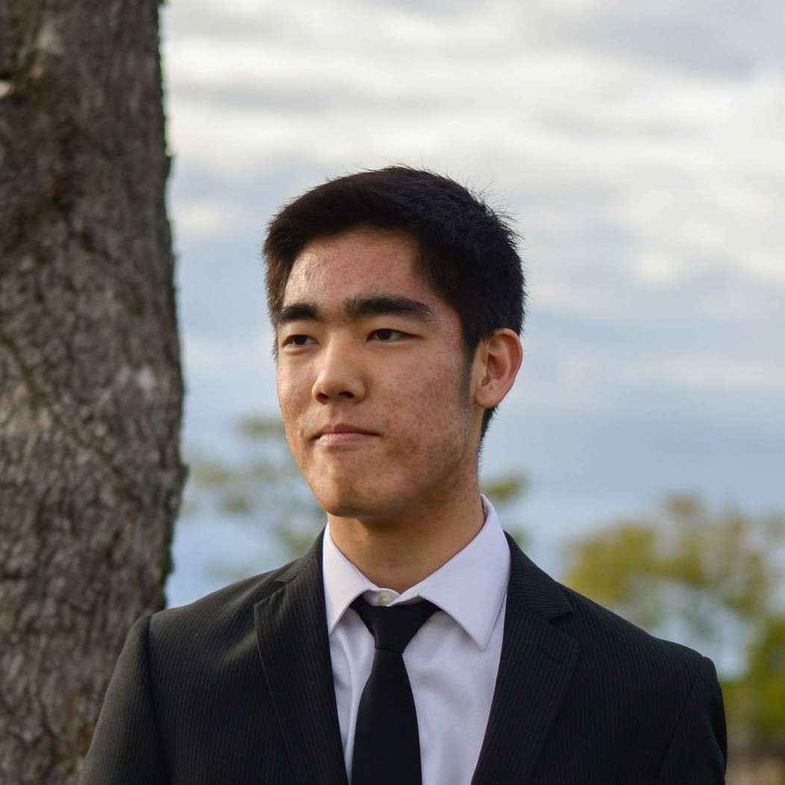

Seiya Ono
seiya.ono12@gmail.com | (949) Two Seven Eight - Six Four Four Three | github
Home | Projects | Builds | Tutoring
Welcome to my website!

Bio
Name: Seiya Ono
Age: 19
2nd Year EECS @ UC Berkeley
Resume
Hobbies
- Karate: 12 years, Black Belt at OCKD, continuing training at Cal Karate
- Music: viola, choir, a capella, jazz choir, drumline
- Video Games
- Hiking
- Biking, boarding, roller blading, unicycling, etc.
- Computer Building